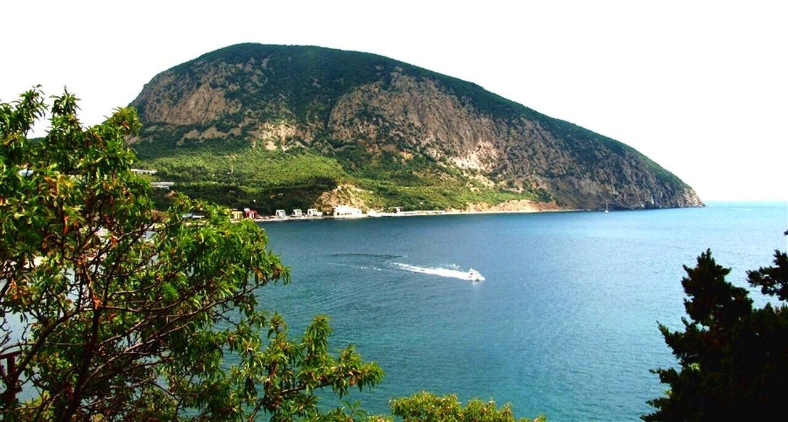

.png)
Маршруты
-

Гора Аю-Даг
Гора Аю-Даг, величественно возвышающаяся над черноморским побережьем, окутана легендами и мифами. В древние времена местные жители считали её священной. Они просили помощи у духа горы, когда в их жизни возникали трудности. Существует и история о прекрасной девушке, влюбленной в отважного юношу, которого унесло в море. Ее скорбь была настолько велика, что она превратилась в гору Аю-Даг. Сегодня туристы восхищаются необычными ландшафтами, великолепными видами на море и окружающие горы. На вершине открываются захватывающие панорамы, даря непередаваемые эмоции. Аю-Даг — это не только природная красота, но и место духа, которое вдохновляет и привлекает искателей приключений.
-

Массандровский дворец
Массандровский дворец, расположенный в живописном Крыму, представляет собой удивительный образец архитектуры начала XX века. Построенный для любимца императора Александра III, он сочетает в себе элементы ренессанса и романтизма. Дворец окружает великолепный парк с экзотическими растениями, где под сенью старых деревьев можно ощутить дух старины. Внутренние залы поражают роскошным декором, старинной мебелью и коллекциями живописи. Особая атмосфера царит в зале для приемов, где когда-то проходили важные встречи. Массандровский дворец не только привлекает туристов своей архитектурой, но и хранит в себе множество историй и тайн, связанных с великими событиями России.
-

Ласточкино гнездо
Ласточкино гнездо — одно из самых известных и романтичных сооружений Крыма, расположенное на вершине скалы вблизи Ялты. Построенное в 1912 году, это маленькое замковое здание сочетает в себе элементы неоготики и эклектики. Оно словно парит над морем, открывая потрясающие виды на Черное море и окружающие горы. Ласточкино гнездо стало символом Крыма и привлекает тысячи туристов, желающих насладиться его красотой и атмосферой. Легенды о любви и преданности, связанные с этим местом, добавляют ему особый шарм. Сегодня здесь проводят экскурсии и культурные мероприятия, сохраняя дух истории и романтики для будущих поколений.
-
Памятник затопленным кораблям
Памятник затопленным кораблям, расположенный в Севастополе, является символом героизма и стойкости русского флота. Установленный в 1905 году, он увековечивает память о военных судах, затонувших во время обороны города. Структура состоит из колонны с мощной основой, увенчанной корабельной мачтой, символизирующей связь с морем и память об ушедших в небытие кораблях. Этот памятник стал культовым местом для севастопольцев и туристов, где отмечаются памятные события и проводятся митинги. С его площадки открывается завораживающий вид на залив и окрестности, создавая атмосферу патриотизма и уважения к историческому наследию, которое хранит этот город.